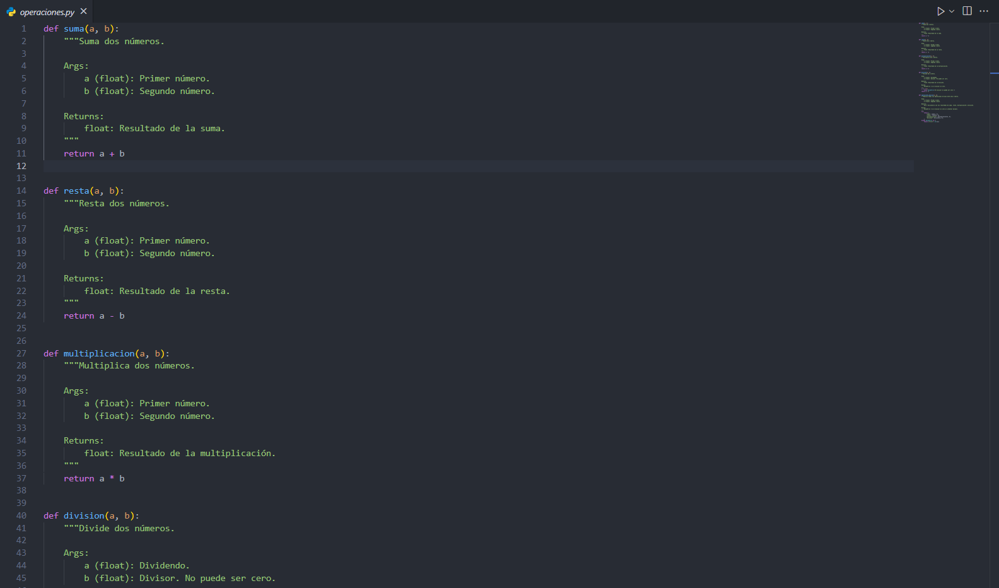
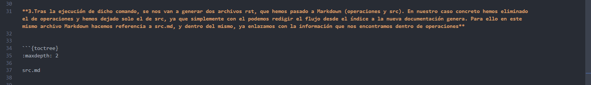
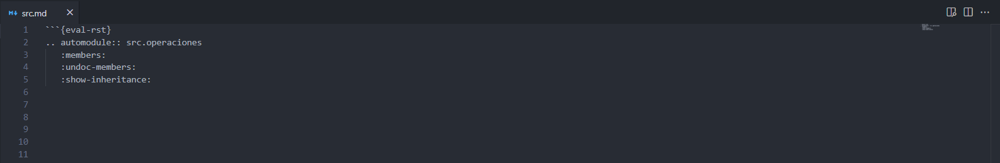
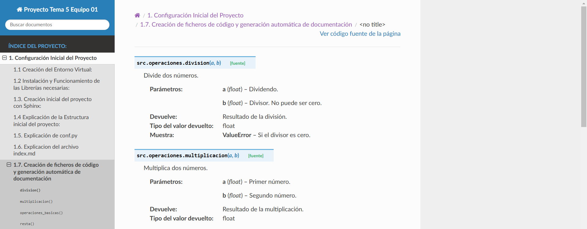

1.7. Creación de ficheros de código y generación automática de documentación
Para generar documentación en base a un archivo de código Python, tendremos que realizar los siguientes pasos:
1. Lo primero es la creación de un archivo de código que deseemos tranformar posteriormente en documentación mediante Sphinx. Para ello, nosotros en nuestro caso ubicamos un directorio /src a la altura de la raíz, donde nos encontramos con el archivo operaciones.py, respectivamente, que es donde se almacena nuestro código. Cabe destacar que posee el formato docstring con estilo Google:

2.Una vez tengamos nuestro archivo listo, debemos de ejecutar el siguiente comando por la terminal. Cabe destacar que en nuestro caso concreto fue desde el directorio raíz:
sphinx-apidoc -o ./docs src
En el cual:
Componente |
Descripción |
|---|---|
sphinx-apidoc |
Genera documentación automáticamente a partir de módulos de Python. |
o ./docs |
Especifica el directorio donde queremos almacenar la información generada. |
src |
Indica el directorio de donde se debe obtener el código y los módulos que queremos documentar. |
3.Tras la ejecución de dicho comando, se nos van a generar dos archivos rst, que hemos pasado a Markdown (operaciones y src). En nuestro caso concreto hemos eliminado el de operaciones y hemos dejado solo el de src, ya que simplemente con el podemos redigir el flujo desde el índice a la nueva documentación genera. Para ello en este mismo archivo Markdown hacemos referencia a src.md, y dentro del mismo, ya enlazamos con la información que nos encontramos dentro de operaciones:


De esta forma, desde este apartado podremos acceder a la documentación que acabamos de generar directamente, la cual vamos a mostrar a continuación
Documentación Generada:
